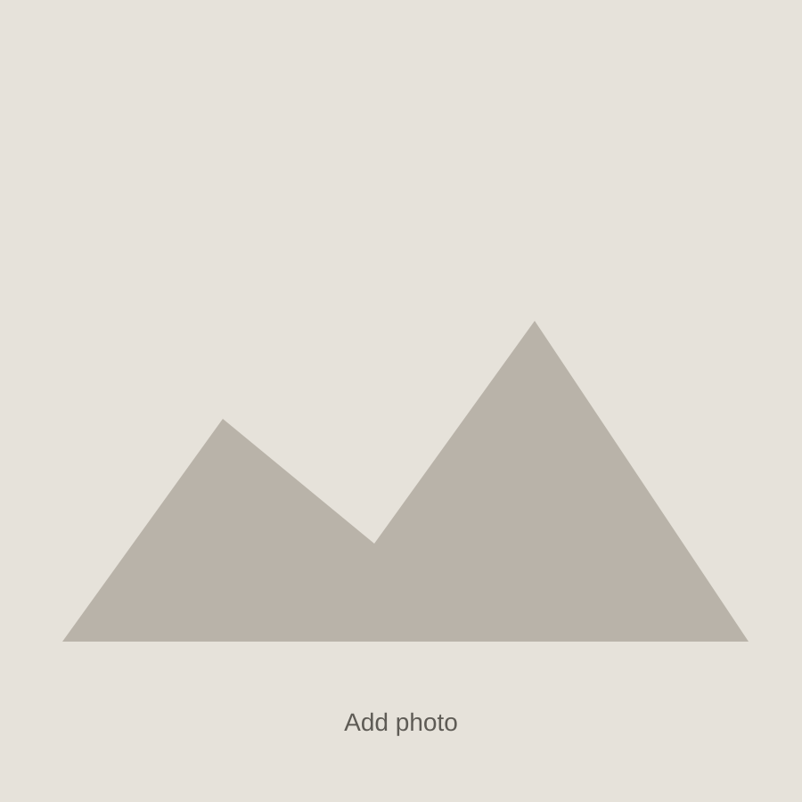

Will Dienstfrey
Home
Projects
Photos
CV
Contact
FIELD & RESEARCH
Photos
Fieldwork, instruments, landscapes, and research environments.

Add caption here.
Add caption here.
Add caption here.
Add caption here.
Add caption here.
Add caption here.